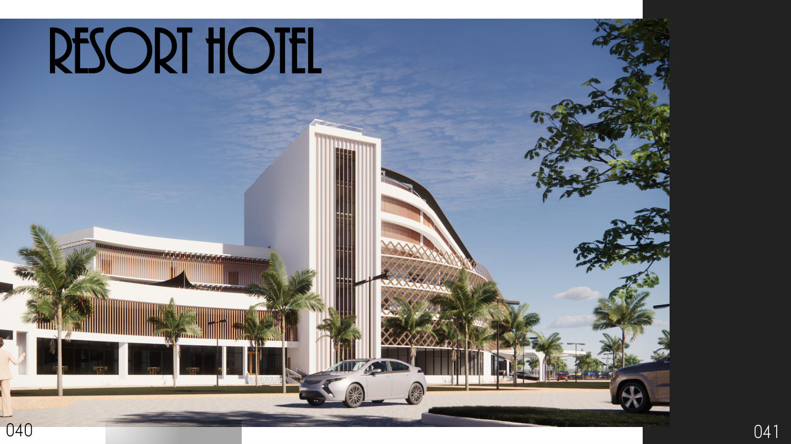
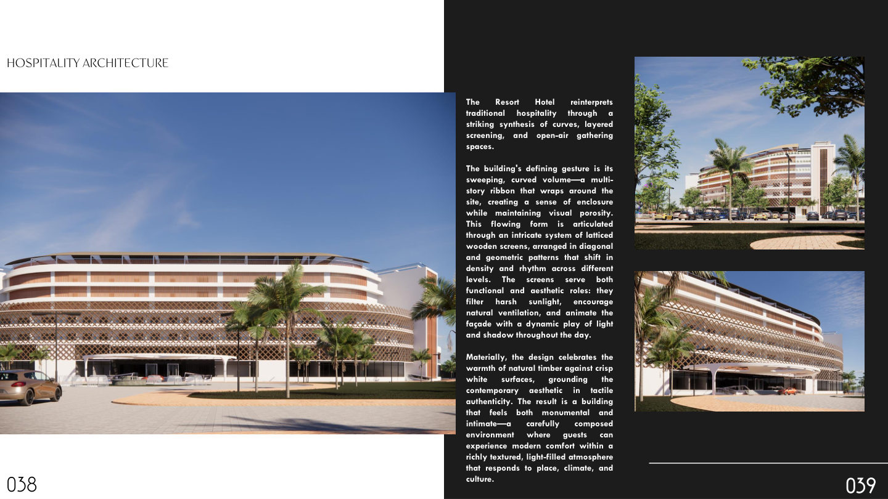
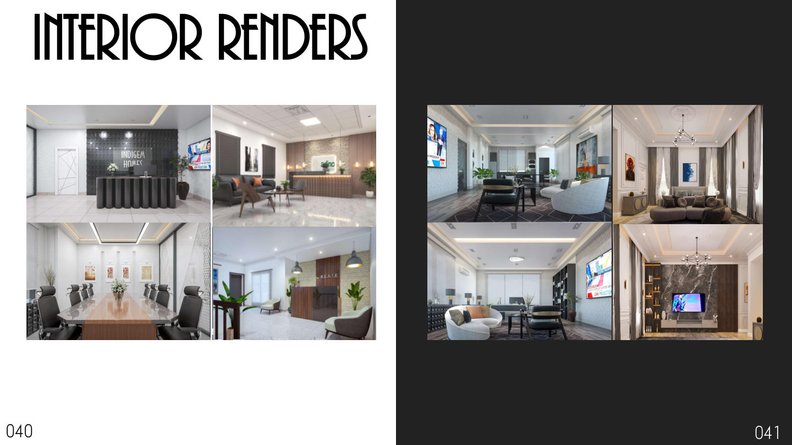

Hospitality Architecture · 2021–2022
Resort Hotel
A reinterpretation of hospitality through curves, layered screening and open-air gathering spaces.
A sweeping multi-story ribbon wraps around the site, creating enclosure while maintaining visual porosity. Latticed timber screens filter sunlight, encourage natural ventilation and animate the façade with changing light and shadow. Natural timber and crisp white surfaces create a tactile, light-filled environment responsive to place, climate and culture.


